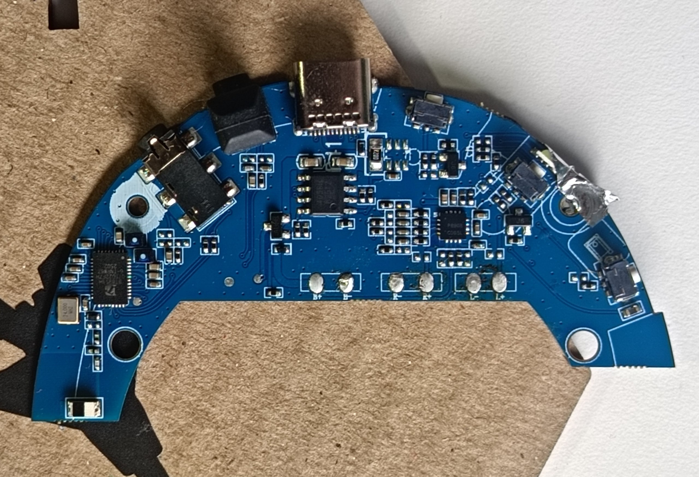
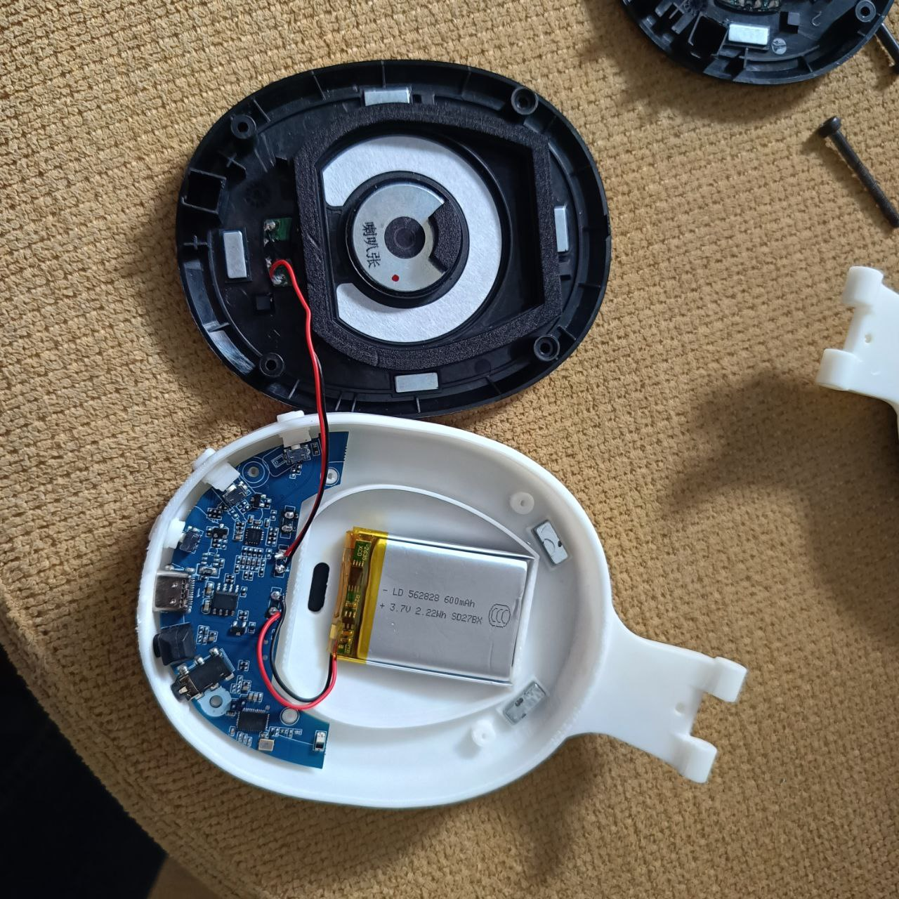
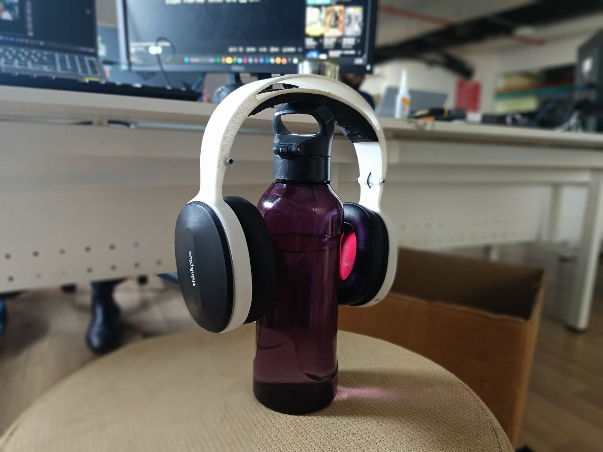
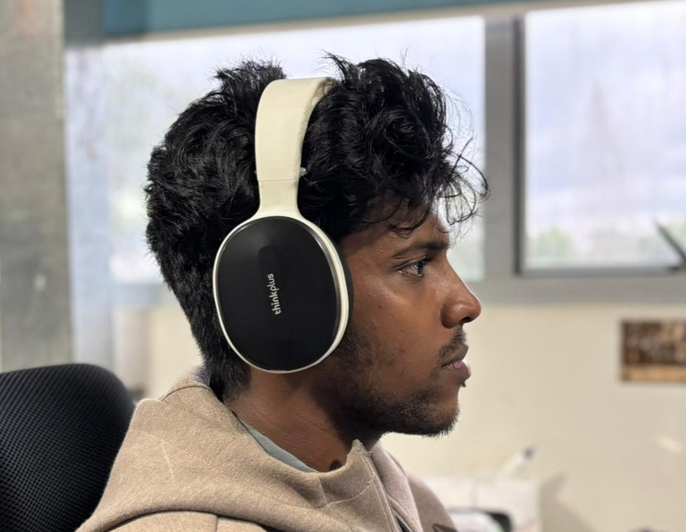

// overview
Overview
At Maker Faire Shenzhen I picked up a pair of headphones from HuaQiangBei — magnetically detachable ear cups, interchangeable back panels, impressive packaging. On the way home, at the airport, the headband snapped. Rather than discard them, I reverse-engineered the entire design, redesigned everything from scratch, printed all structural parts in PLA, and reassembled the headphones using the original PCB, speakers, magnets, and fasteners. The rebuild added a folding hinge the original never had.
// specs
Project Details
// background
The Problem
The original headband failed at the center — the curved geometry concentrated bending stress exactly at the weakest cross-section. The injection-molded plastic couldn't handle repeated flexing at that point. I documented the failure mode and used it to guide the redesign rather than just copying the same geometry.

The original — convincing packaging, magnetic ear cups, interchangeable panels

Failure point — stress concentrated at the curve's center
// design
Design Process
Attempt 1 — Direct Replica
My first approach was to recreate the original headrest geometry as closely as possible so the existing foam padding would fit. I designed it in Rhino, going through multiple iterations to capture the curves from manual measurements. The problem: measuring a curved, foam-padded component with calipers is imprecise, and FDM tolerances couldn't reliably match the injection-molded mating parts.

Rhino design iterations of the headrest — each round required new measurements and reprints
Attempt 2 — Full Redesign from Scratch
I abandoned the replica approach and instead designed the complete headphone around the components worth keeping — the PCB, speakers, ear cups, and magnetic hardware. The side housings required careful curve matching in Rhino so the original magnetic attachment geometry would still work. Once those were solid, I imported them into Fusion 360 and designed the rest of the assembly around them, including a new folding hinge mechanism.

Side housing in Rhino — geometry matched to the original magnetic attachment system
Fusion 360 model — complete assembly with the folding hinge mechanism
// build
Manufacturing & Assembly
All structural parts were printed in PLA. Most fasteners were salvaged from the original unit. The hinge mechanism required two additional M-size nuts and bolts — the only new hardware purchased for the project. The PCB, battery, speakers, magnets, and all ear cup components were transplanted directly.
One compromise: a single PCB LED had to be removed because it interfered with the 3D-printed button geometry. Everything else was retained.

Original PCB — reused entirely

All printed parts laid out before assembly

Internal layout — PCB, battery, and magnets positioned before closing
// result
Result
The rebuilt headphones work correctly — audio, button controls, and magnetic ear cup attachment all function as expected. The folding hinge adds real utility the original never had. They've been in daily use since assembly without issues.

Finished — fully functional, foldable, built almost entirely from original parts

Daily driving the rebuild
// lessons
Lessons Learned
- Curved, foam-padded components are hard to measure with calipers — a 3D scanner would have saved iterations
- Designing around original parts is more reliable than copying them exactly
- The original failure was a design flaw, not just a material one — geometry concentrated stress at the wrong point
- Reusing electronics and hardware from broken products is practical and satisfying
// tools
Tools & Software
- Rhino — curve-accurate side housing design
- Fusion 360 — full assembly design, hinge mechanism
- 3D Printer — PLA part fabrication
- Calipers & cutting mat — measuring broken components